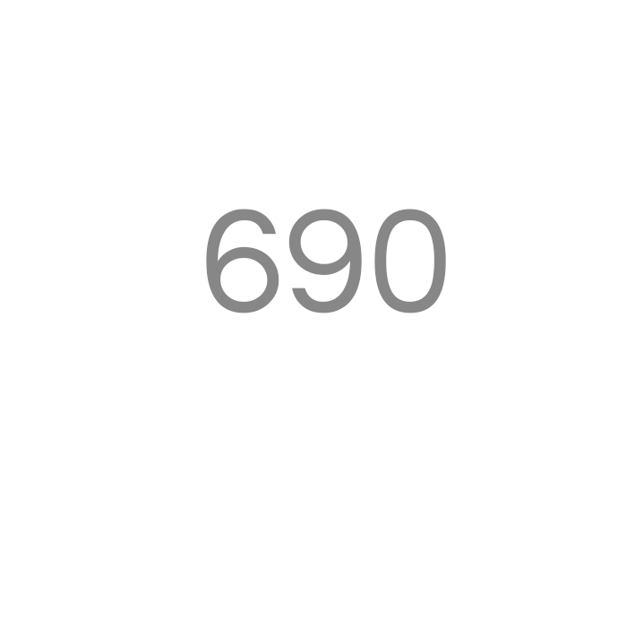

Нам не нужен тэг picture, как таковой. Нам достаточно атрибута srcset и sizes, чтобы задавать только необходимые размеры картинок на определённых разрешениях.
Вот пример где гугл ругается на то, что картинки можно было бы и уменьшить https://developers.google.com/speed/pagespeed/insights/?url=https%3A%2F%2Fhttp2-cdn.e6-demo.dealerfire.com%2Fvehicle-details%2F10414968-6s0&tab=desktop
Вот где уже не ругается, потому что я использовал srcset и sizes https://developers.google.com/speed/pagespeed/insights/?url=https%3A%2F%2Fhttp2-cdn.e6-demo.dealerfire.com%2Fstatic%2Fvdp.html&tab=desktop
Смотреть надо только на jpg картинки которые проходят через тамбер.
Как видно на втором тесте гугл не ругается на них. То чего мы и хотели добиться.
Детали реализации:
В ходе исследования стало понятно что для каждой картинки надо генерить подобный код: